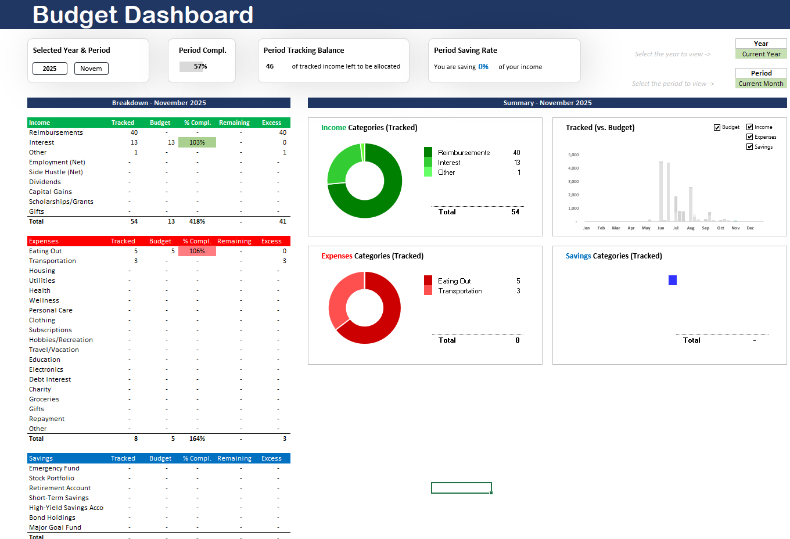
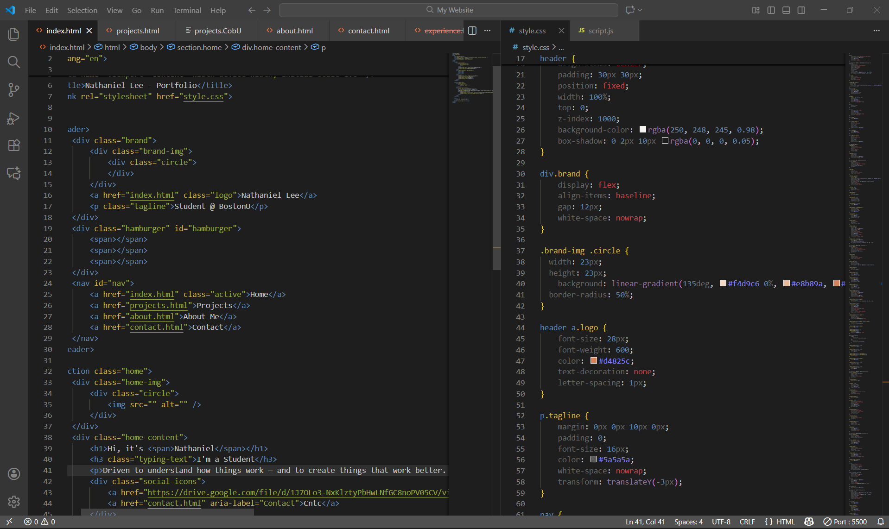

My Projects
EEG Attention Classifier (2026)
Using Python and scikit-learn, I built a machine learning pipeline to classify Covert vs Overt Attention from EEG signals, improving model accuracy from 33% to an expected 55-75%.
Initial attempts achieved only 33% accuracy. Instead of accepting this baseline, I investigated the root cause: severe class imbalance (30 covert vs 160 overt samples) and suboptimal features.
I engineered 17 neuroscience-informed frontal-specific features based on the principle that covert attention requires saccade inhibition, producing distinct frontal neural signatures.
This alone improved discriminative power.
I then applied advanced ML techniques: Recursive Feature Elimination reduced dimensionality by 80%, GridSearchCV optimized hyperparameters across SVM and Random Forest models with 5-fold cross-validation, and SMOTE balanced training data by generating synthetic minority samples.
To prevent overfitting, I added class weights and early stopping callbacks.
The final system is a neural network ensemble that learns to optimally fuse SVM and RF predictions, often outperforming individual models.
I validated across multiple EEG datasets (Emotiv EPOC and standard 25-channel systems) and created an automated pipeline with comprehensive evaluation metrics.
This 22-42% improvement demonstrates that thoughtful feature engineering grounded in neuroscience, combined with principled solutions to real-world ML challenges, significantly outperforms naive approaches.
The experience deepened my understanding of signal processing, statistical learning, and building reproducible research pipelines—core foundations for brain-computer interfaces and neurotechnology.
Learn more about the project and see the code on my GitHub: eeg-attention-classifier
Full Project Walkthrough:
Q-Learning Rock-Paper-Scissors AI (2026)
Built a Q-Learning agent to play Rock-Paper-Scissors against player inputs. The agent learns by updating its Q-values based on the outcomes of each game, aiming to maximize its chances of winning over time and predicting the player's next move based on historical data. This project provided me hands-on experience with reinforcement learning concepts and the implementation of a simple yet effective AI agent. It allowed me to understand how to create a model in a custom environment with a custom reward system.
Full Project Walkthrough:
Excel Financial Budget Dashboard (2025)
Followed a guided tutorial by "The Office Lab" to build visualizations, automated formulas, and two personal modeling systems inside Excel. My main goal was creating something practical—a tool I could actually use to budget income and expenses, track my net worth, and monitor transactions between my accounts and stocks. Through this project, I learned the basics of Excel and Excel-based financial modeling. Having this budget has helped me make better financial decisions when it comes to expenses, and I've cut down on a lot of unnecessary wants.

Full Project Walkthrough: Explore the Budget system, the raw data input sheet, and key formula examples demonstrating the automated nature of the dashboard.
Personal Portfolio Website (2025)
Built my own website from scratch for a multitude of reasons: I wanted a digital portfolio to showcase my personal projects—ranging from coding/programming, writing, or other artistic forms of expression;
I wanted to relearn HTML/CSS/JavaScript before I embarked on working with Python and C++;
I don't find LinkedIn appealing for showcasing my experience.
My goal with this project was to create a minimal, professional website to call my own.
I planned to have 'cool' colors and to have an actual interactive timeline but sometimes "little goes a long way."
And I was ultimately inspired by a Stanford scientist's personal website and a 20-minute tutorial that I saw on YouTube.
This project has allowed me to learn about UI design, web development and engage with the fundamentals of HTML/CSS/JavaScript that I haven't used since freshman year of high school.
And to grasp the higher/harder concepts of these languages, I used online and Ai resources.

Behind the Scenes: A look at the HTML and CSS used to build my personal website from scratch. The screenshot highlights the structural markup in index.html and the design rules in #style.css, demonstrating the foundational coding work required to create a minimal, professional portfolio.